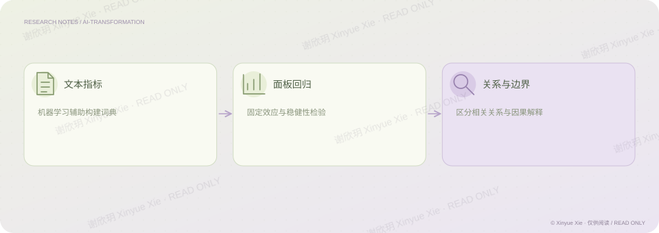

实证论文
AI 转型的隐性成本
企业采用 AI，短期回报一定会提高吗？
PROJECT NOTES / THE BIG PICTURE
研究思路

01核心判断
这篇实证论文研究企业 AI 转型与资产回报率的关系。我使用机器学习方法构建文本词典，并结合固定效应面板回归分析企业数据。研究结果显示，在研究样本与模型设定下，AI 转型与资产回报率之间存在稳健的负向关系。这项研究提醒我：技术投入的价值并不会自动、即时地表现为财务回报，判断需要结合研究条件与证据。
02分析过程
将企业 AI 转型转化为可以研究的文本指标。 用固定效应面板回归检验它与资产回报率的关系。 把结果限制在样本与识别条件内，不把相关关系直接写成普遍因果结论。
03论文与项目题名
《人工智能转型的隐性成本——对企业资产回报率（ROA）的抑制效应的实证研究》
相关经历实证论文
检验证据
用文本指标与面板回归研究问题，并区分关系与因果。
谢欣玥 Xinyue Xie · 研究作品仅供在线阅读
← 返回全部作品